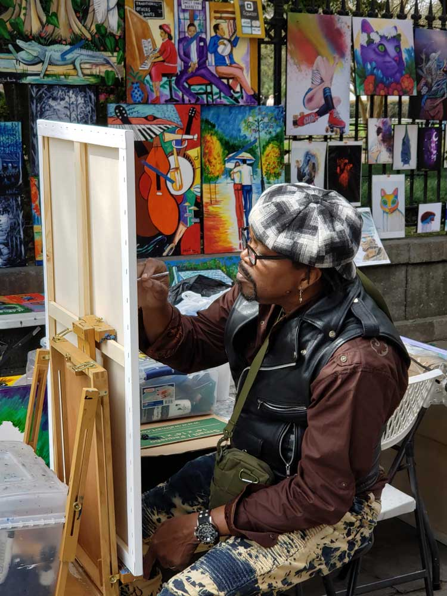
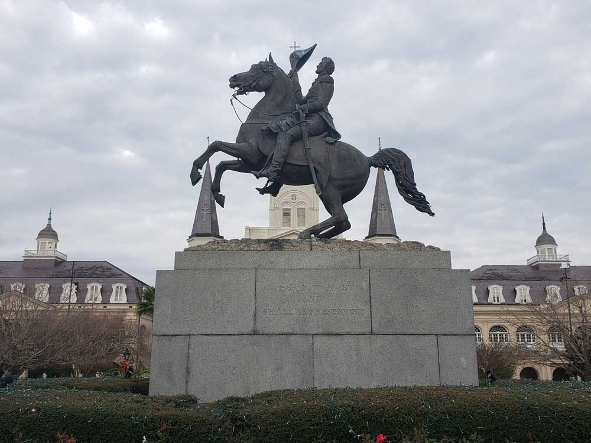
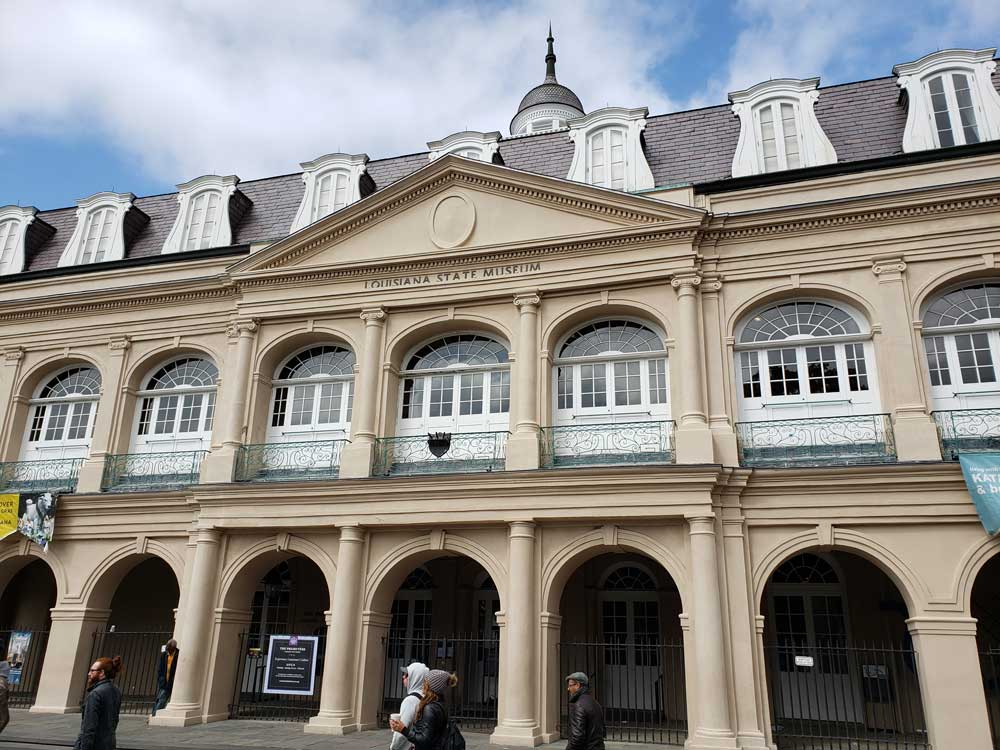
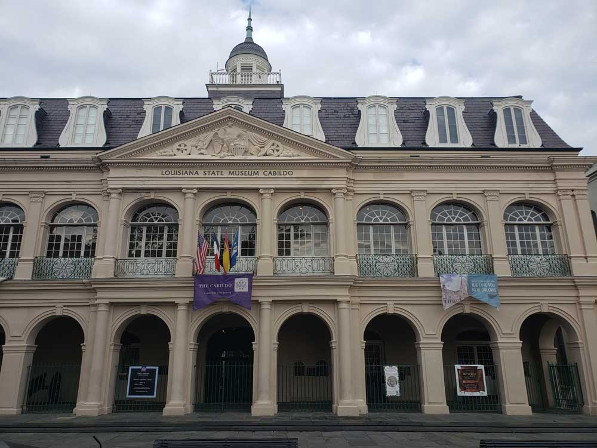
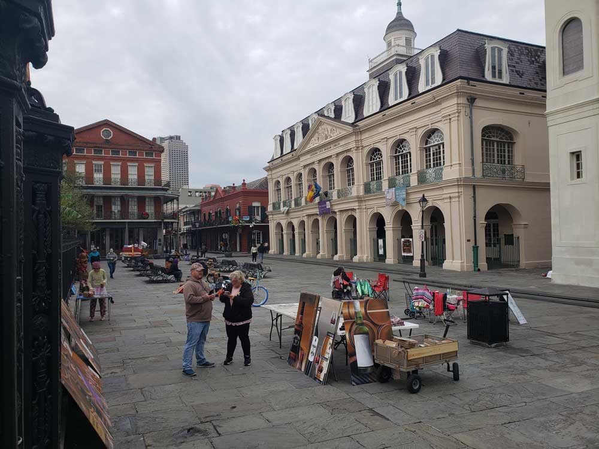
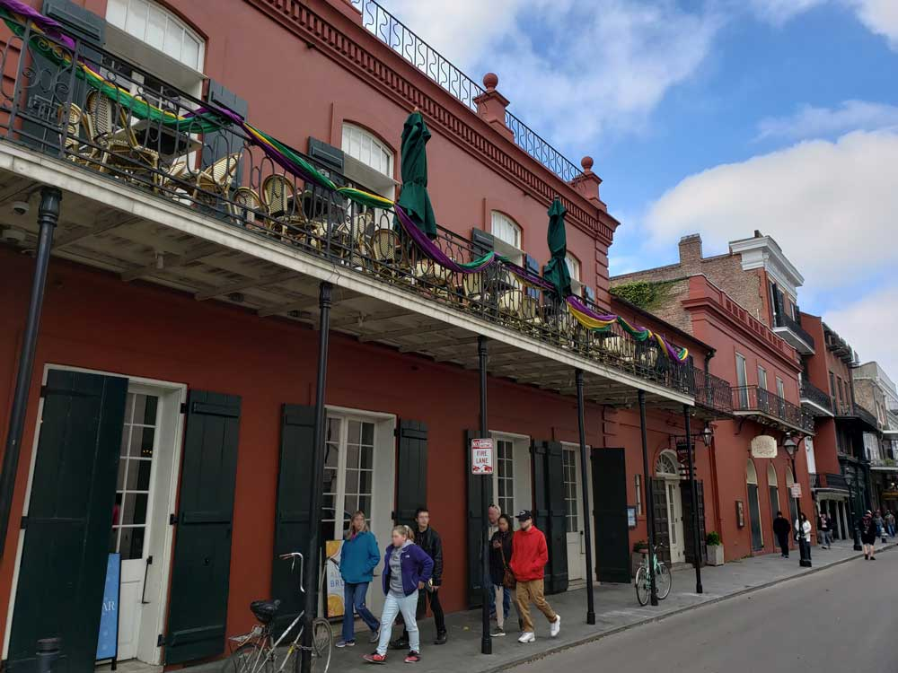
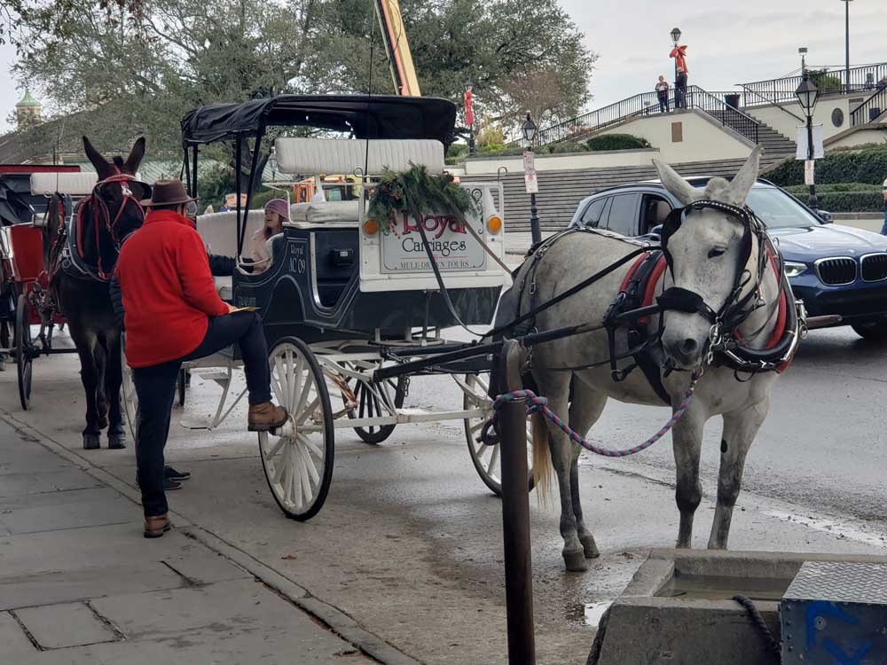
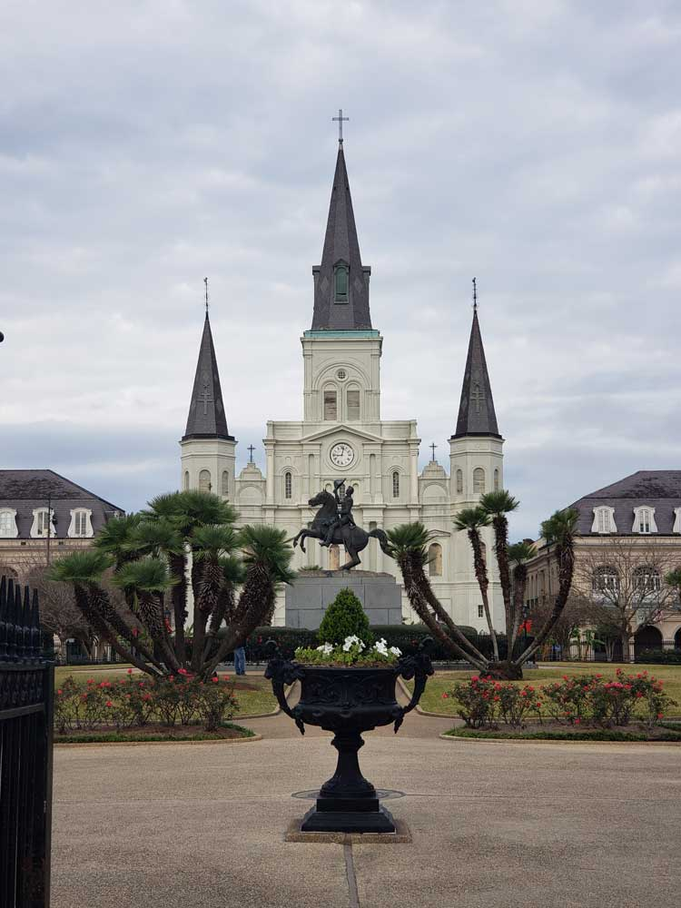
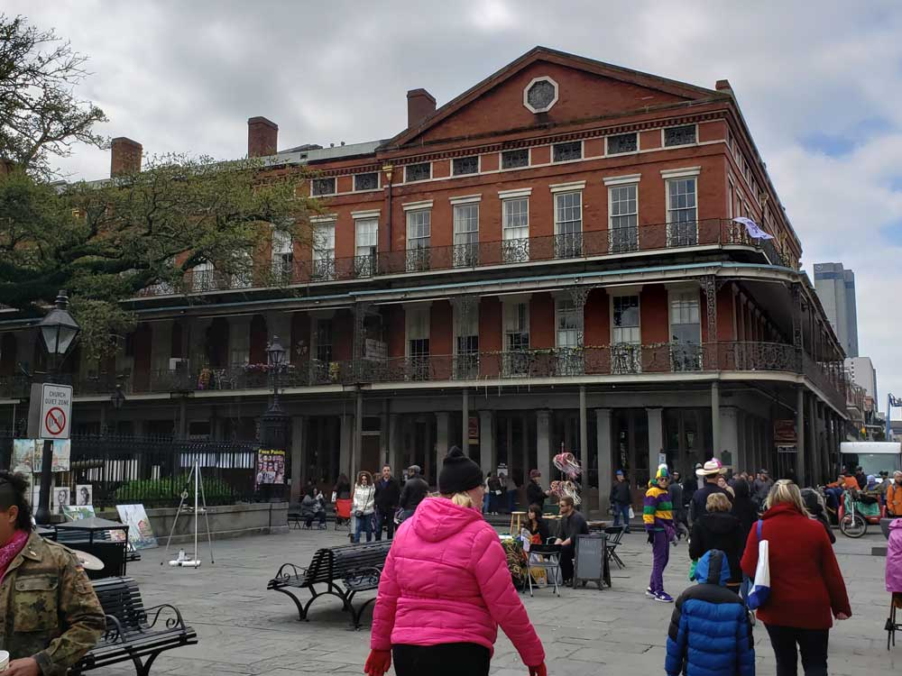

Historic park in the French Quarter, declared a National Historic Landmark in 1960, for its central role in the city's history, and as the site where in 1803 Louisiana was made United States territory
General Information
How to Get There
Head north on Carondelet St toward Union St. Turn right onto Gravier St. Turn left onto Camp St. Continue straight onto Chartres St. Turn right onto Conti St. Turn left at the 2nd cross street onto N Peters St. N Peters St turns right and becomes Decatur St.
Overview
Jackson Square is a historic park in the French Quarter of New Orleans, Louisiana. It was declared a National Historic Landmark in 1960, for its central role in the city's history, and as the site where in 1803 Louisiana was made United States territory pursuant to the Louisiana Purchase. In 2012 the American Planning Association designated Jackson Square as one of the Great Public Spaces in the United States.
Jackson Square was designed after the famous 17th-century Place des Vosges in Paris, France, by the architect and landscape architect Louis H. Pilié. Jackson Square is roughly the size of a city block.
Sculptor Clark Mills' equestrian statue of Andrew Jackson (a recasting of the Washington, D.C., statue), hero of the Battle of New Orleans and seventh U.S. President for whom the former military parade ground was named, was erected in 1856. Iron fences, walkways, benches, and Parisian-style landscaping remain intact from the original design by Micaela Almonester, Baroness de Pontalba, in 1851. She also built the Pontalba Buildings, which flank the old square.
The flagpole, symbolizing the 1803 ceremonial transfers from Spain to France and then from France to the United States, reflects Louisiana's rich colonial history. During the 1930s, the Works Progress Administration (WPA) repainted façades, renovated buildings, and improved landscaping in and around the park. In 1971, the pedestrian zone in the vicinity of Jackson Square was created, when three surrounding streets were closed to vehicular traffic — Chartres, St. Peter, and St. Ann.
History
Early French colonial New Orleans was centered on what was then called the Place d'Armes (lit. 'weapons' square'). Following the 1815 Battle of New Orleans, the former military plaza was renamed Jackson Square, for the battle's victorious General Jackson. In the center of the park stands an equestrian statue of Andrew Jackson erected in 1856, one of four identical statues in the U.S. by the sculptor Clark Mills. On the north side of the square are three 18th-century historic buildings, which were the city's heart in the colonial era. The center of the three is St. Louis Cathedral. The cathedral was designated as a minor Basilica by Pope Paul VI. To its left is the Cabildo, the old city hall, now a museum, where the final version of the Louisiana Purchase was signed. To the cathedral's right is the Presbytère, built to match the Cabildo. The Presbytère was initially planned for housing the city's Roman Catholic priests and other church officials. At the start of the 19th century, it was adapted as a courthouse, and in the 20th century it became a museum. Iron fences, walkways, benches, and Parisian-style landscaping remain intact from the original design in 1851.
From the 1920s through the 1980s, Jackson Square became known for attracting painters, young art students, and caricaturists. In the 1990s, the artists were joined by tarot card readers, mimes, fortune tellers, and other street performers. Live music has been a regular feature of the entire Quarter, including the Square, for more than a century. On the other two sides of the square are the Pontalba Buildings, matching red-brick, block-long, 4-story buildings built in the 1840s. The ground floors house shops and restaurants; the upper floors are apartments, the oldest continuously-rented apartments in North America.
Directly across from Jackson Square is the Jax Brewery building, the original home of a local beer. After the company ceased to operate independently, the building was converted for use by retail businesses, including restaurants and specialty shops. Behind the Jax Brewery lies the Toulouse Street Wharf, the regular pier for the excursion steamboat, Natchez. Diagonally across Decatur Street downriver from the square is Café du Monde, open 24 hours a day. Part of the historic French Market, it is known for its café au lait, prepared with chicory, and for its beignets, served there continuously since the Civil War days.
Jackson Square has been filmed in numerous television shows and movies. Among these are the films Angel Heart, The Curious Case of Benjamin Button, King Creole, and television series K-Ville, Treme, Memphis Beat and The Originals.
Louisiana State Museum
The Louisiana State Museum, founded in New Orleans in 1906, is a statewide system of National Historic Landmarks and modern structures across Louisiana, housing thousands of artifacts and works of art reflecting Louisiana's legacy of historic events and cultural diversity.
Overview
The Louisiana State Museum system has its beginnings in the Louisiana Purchase Exposition in 1904 at St. Louis, Missouri. A large number of pertinent artifacts were gathered to be displayed at Louisiana's exhibition at this fair. After the Exposition, it was decided that this collection should be stored, expanded, and displayed. The Louisiana State Museum was established in 1906 to fulfill this role. The Presbytere and the Cabildo buildings, located on either side of the St. Louis Cathedral on Jackson Square, were some of the first properties that the Louisiana State Museum was lodged in. The Louisiana State Museum now has thirteen properties around the state: historic structures, museums open to the public, and modern purpose-built buildings.
Over the past 100-plus years, the Louisiana State Museum has not only operated museums and maintained buildings, but it has served as the repository for all things historic from the state's past. As Louisiana has been part of a French colony, a Spanish colony, Napoleon's short-lived property, the United States' Louisiana Purchase territory, and finally the state of Louisiana; the Louisiana State Museum's collections of artifacts and documents are an important asset for understanding state, national, and even global history.
In addition to protecting and preserving Louisiana's historic artifacts and buildings, the Louisiana State Museum is proactive in many areas concerning the state's unique culture and history. In addition to opening new facilities, the State Museum is continually creating new temporary and permanent exhibits, bringing to light intriguing topics from Louisiana's culture and history.
The Cabildo
The Cabildo - Spain's old City Hall, or "Casa Capitular," was built in 1799. It was the site of the two Louisiana Purchase transfers of 1803 (from Spain to France, and from France to the U.S.). It housed various government offices, including the Louisiana Supreme Court. The building took its name from the governing body who met there—the "Illustrious Cabildo," or city council. The building's main hall, the Sala Capitular ("Meeting Room"), was originally utilized as a courtroom. The Spanish used the courtroom from 1799 to 1803, and from 1803 to 1812 it was used by the Louisiana territorial superior court. During the years between 1868 and 1910, the Cabildo was the seat of the Louisiana Supreme Court. The Sala Capitular was the site of several landmark court cases, including Plessy v. Ferguson. In 1911, the Cabildo became the home of the Louisiana State Museum. The museum displays exhibits about the history of Louisiana from its settlement up through the Reconstruction Era, and about the heritage of the ethnic groups who have lived in the state.
Collections
The Cabildo displays three floors of exhibits concerning Louisiana's history, with additional changing exhibits in the adjoining Arsenal building. The Louisiana State Museum has two main collections facilities in New Orleans. The main collections facility is located within the French Quarter. This facility houses Visual Arts, Costumes & Textiles, Science & Technology, and the Decorative Arts Collection. The second facility is the Old U.S. Mint on Esplanade Avenue, which houses the Document Archives and Jazz & Music Archives. The Mint houses the Louisiana Historical Center, which gives amateur and professional researchers the opportunity to access the Document Archives. In addition to maps and manuscripts, the Center houses sheet music, microfilm, scrapbooks, pamphlets, and newspapers.
The Presbytère
The Presbytère is a state museum with Hurricane Katrina & Mardi Gras exhibits in a former courthouse built in 1813. An architecturally important building in the French Quarter, it stands facing Jackson Square, adjacent to the St. Louis Cathedral. Built in 1791 as a matching structure for the Cabildo, which flanks the cathedral on the other side, it is one of the nation's best examples of formal colonial Spanish architecture (with many neo-Renaissance elements). It is now a property of the Louisiana State Museum.
History
The Presbytère was designed in 1791 by the French-born Gilberto Guillemard. Its name derives from the fact that it was built on the former site of the residence of the Capuchin monks and presbytery (rectory, presbytère in French). While intended to house clergy, it was never used as a religious residence. The building initially was used for commercial purposes until 1834, when it was used by the Louisiana Supreme Court. In 1853, cathedral officials sold the Presbytère to the city, and in 1908 the city sold it to the state. In 1911 it became part of the Louisiana State Museum.
p class="third-party-img">This article uses material from the Wikipedia articles "Jackson Square (New Orleans)", "Louisiana State Museum", "The Cabildo", and "The Presbytere" which are released under the Creative Commons Attribution-Share-Alike License 3.0







